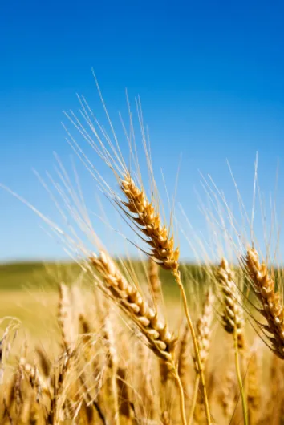
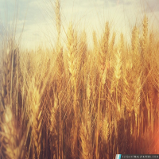
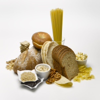
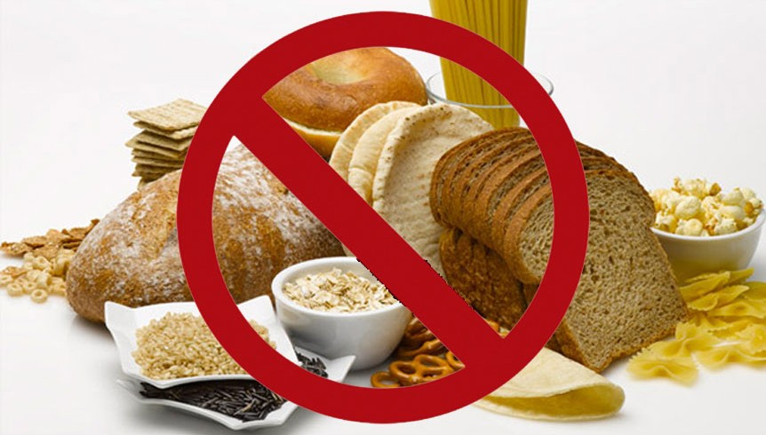

Le gluten est un mélange de protéines associées à de l'amidon qui constitue la plupart des céréales et qui est responsable de l'élasticité de la pâte. Ces proteines sont divisées en deux groupes, la gliadine et la gluténine, qui sont toutes deux insolubles. Elles permettent à la pâte de lever lors de la fermentation.
Les céréales sont cultivées par l’homme et sont un élément fondamental de son alimentation depuis plusieurs milliers d’années et celles que nous consommons aujourd’hui ne sont pas différentes de celles de jadis. Seules les personnes qui présentent une intolérance au gluten, qui relève sans doute d’une réaction s’apparentant à une maladie auto-immune, doivent écarter les aliments contenant ces protéines.

En effet, dans leur cas, l'ingestion, même en quantité minime de gluten, provoque des lésions de l'intestin grêle, une atrophie des villosités intestinales, ce qui a pour effet d'entraîner la destruction de la paroi.
Par définition le gluten influence la cuisson de la farine, il a un rôle prépondérant dans l'élaboration de nombreuses préparations culinaires. Le gluten absorbe l'eau préalablement ajoutée à la farine lors de la préparation d'une pâte et permet sa fermentation. Sans lui, la pâte ne gonflerait pas et ne pourrait être pétrie. Une fois la pâte prête, elle est placée au four pour y être cuite. Lors de la cuisson, le gluten présent dans la pâte libère une partie de l'eau qu'il avait précédemment absorbé et s'associe à l'amidon de la farine pour permettre une cohésion parfaite de la structure du pain. Considéré comme la colle du pain, il offre ainsi aux céréales un pouvoir agglutinant et liant. Sans cela, pas de pain, pas de pâtes !
Le gluten se retrouve principalement dans des aliments à bases de céréales. Voici une liste non exhaustive d'aliments contenant des quantités importantes de gluten:


Certains individus ont la possibilité d'ingérer du gluten sans aucune conséquence pathologique (ils sont rares, de plus en plus rares). D'autres manifesteront certaines pathologies mais ne feront aucun lien avec les intolérances dérivant du lait et du gluten. Certains sujets susceptibles à ces deux substances débelopperont des pathologies, et leurs médecins plus informés feront le lien entre leurs intolérances et allergies liés à leurs pathologies, comme par exemple le gluten peut provoquer des lésions de la muqueuse jéjunale corrélée à tous les symptômes décrits plus haut (tableau du Pr. Reichelt).

Le gluten est reconnu depuis longtemps comme un allergène/antigène majeur.
Une réaction
d’intolérance sert de base au mécanisme de cette maladie.
Le gluten déclenche en tant qu’antigène une réaction immunitaire qui, suite à un apport alimentaire quotidien,
aboutit à une réaction inflammatoire
chronique avec finalement une atteinte des tissus.
Les lésions tissulaires progressent au cours du temps jusqu’à la destruction complète des villosités
intestinales.